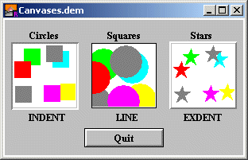

GUI.CreateCanvas (x, y, width, height : int) : int GUI.CreateCanvasFull (x, y, width, height : int,    border : int,    mouseDown : procedure x (mx, my : int),    mouseDrag : procedure x (mx, my : int),    mouseUp : procedure x (mx, my : int)) : int
Creates a canvas and returns the canvas' widget ID. A canvas is a drawing surface for use by the program. It differs from just using the window surface to draw on in that (0, 0) represents the lower-left corner of the canvas and all drawing is clipped to the canvas. (This means that if you accidently attempt to draw outside of the canvas, it will not actually draw beyond the border of the canvas.) Canvases have procedures that emulate all the procedures in the Draw module as well as a procedure to emulate Font.Draw, Pic.Draw, Pic.New, Pic.ScreenLoad and Pic.ScreenSave. You can get mouse feedback from a canvas. Using the CreateCanvasFull method, you can specify three routines that are called when the mouse button is depressed while pointing in a canvas. One routine will be called when the user presses the mouse button down in a canvas. Another routine will be called while the user drags the mouse with the mouse button down. This routine is repeatedly called whenever the mouse changes position while the mouse button is down. The last routine is called when the mouse button is released. All three routines take an x and y parameter, which is the location of the mouse with respect to the canvas (i.e. (0, 0) is the lower-left corner of the canvas). Output of Canvases.dem The x and y parameters specify the lower-left corner of the canvas. The width and height parameters specify the width and height of the canvas. For GUI.CreateCanvasFull, the border parameter specifies the type of border that surrounds the canvas and is one of 0, GUI.LINE, GUI.INDENT or GUI.EXDENT. A border of 0 is the default and is the same as GUI.LINE. GUI.INDENT and GUI.EXDENT only display properly if the background colour has been set to gray using GUI.SetBackgroundColor. GUI.INDENT makes the canvas appear indented or recessed. GUI.EXDENT makes the canvas appear to stand out from the window. The mouseDown parameter is a procedure called when the user presses the mouse button in the canvas. The mouseDrag parameter is a procedure called when the user drags the mouse while the mouse button is still pressed. The mouseUp parameter is a procedure called when the user releases the mouse button. The parameters to all three are the x and y location of the mouse where the button was pressed (dragged/released). The coordinates are given with respect to the canvas (i.e. (0, 0) is the lower-left corner of the canvas).

The following program draws 10 random stars in the canvas.
import GUI
var canvas : int := GUI.CreateCanvas (10, 10, maxx - 20, maxy - 20)
for i : 1 .. 10
var x : int := Rand.Int (0, maxx - 20)
var y : int := Rand.Int (0, maxy - 20)
var c : int := Rand.Int (0, maxcolor)
GUI.DrawFillOval (canvas, x, y, 20, 20, c)
end for
When GUI.CreateCanvas or GUI.CreateCanvasFull is called, the newly created canvas will be displayed immediately unless GUI.DisplayWhenCreated has been called with the display parameter set to false. The border of the canvas is just outside the drawing surface, so GUI.GetWidth and GUI.GetHeight will return slight larger values than width and height. When the canvas is disabled, clicking the mouse in the canvas does not call any of the mouseDown, mouseDrag, or mouseUp procedures. The appearance of the canvas does not change.
The following GUI subprograms can be called with a button as the widgetID parameter: Â GUI.Show, GUI.Hide,GUI.Enable, GUI.Disable, GUI.Dispose,GUI.GetX, GUI.GetY, GUI.GetWidth,GUI.GetHeight, GUI.SetPosition, GUI.SetSize,GUI.SetPositionAndSize, GUI.DrawÂ…,GUI.FontDraw, GUI.PicÂ…, GUI.SetXOR
Exported qualified. This means that you can only call the function by calling GUI.CreateCanvas, not by calling CreateCanvas.
gui_draw.html, gui_fontdraw.html,gui_pic.html, and gui_setxor.html for drawing on a canvas.